After importing the solution, you can customize the locked app by adding new fields to its forms through context extension.
The option is available if the developer allowed to augment the app context when creating the solution.
- To add a field, click the 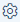 icon next to the app name and select Context Extension.
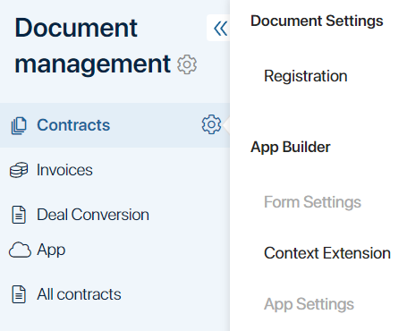
- In the opened window, on the Context tab, create properties. Note that the
_extendedsuffix is automatically added to the name of the new property.
You can create a property and perform other actions with it in the same way as on the Context tab in the app form settings.
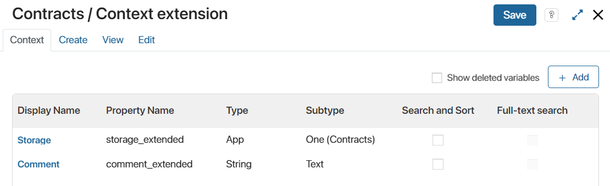
- Now place the properties on the app forms. To do this, move them to the Create, View, and Edit tabs. The extended context property will appear on the form in the location where the developer placed the Extended context display widget.
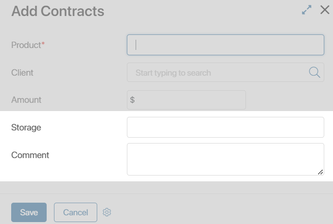
If the developer of the solution has not placed the Extended context display widget on the form you selected, the added properties will not be displayed.
Note that properties from the extended context are not available in the form settings but are displayed in the general list of context variables when creating a script, business process, and widget.
Create a widget with properties from the extended context
Properties from the extended context can be used to create a convenient user interface using widgets. Let’s consider such an example.
The developer of the Employee page app has customized an extended context and added the Extended context display widget to the Additional tab of all app forms.
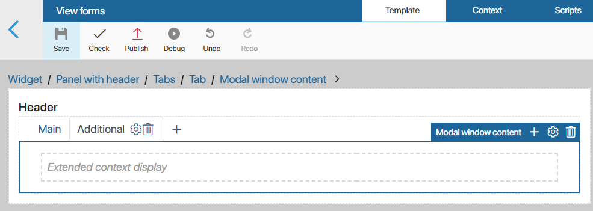
We will import the solution with the Employee page app into our company.
Even though the app is locked, we can add new fields thanks to the Context extension setting. Let’s add family information to the forms:
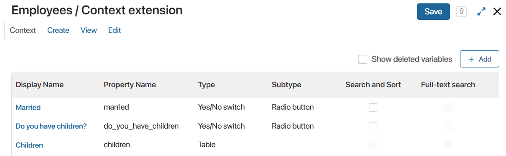
The new fields are displayed on the app form on the Additional tab in a list:
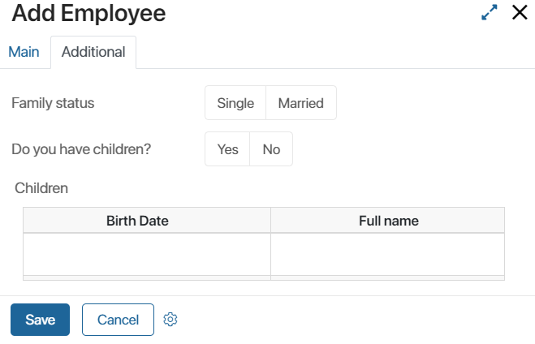
Let’s customize the display of added fields on the form in two columns. To do this, let’s create a widget:
- In the Context Extension settings menu item, open the form tab where you want to place the widget, for example, the Create tab.
- In the Widget field, click the Default link. The Create widget button will appear. Click it to proceed to create the widget.
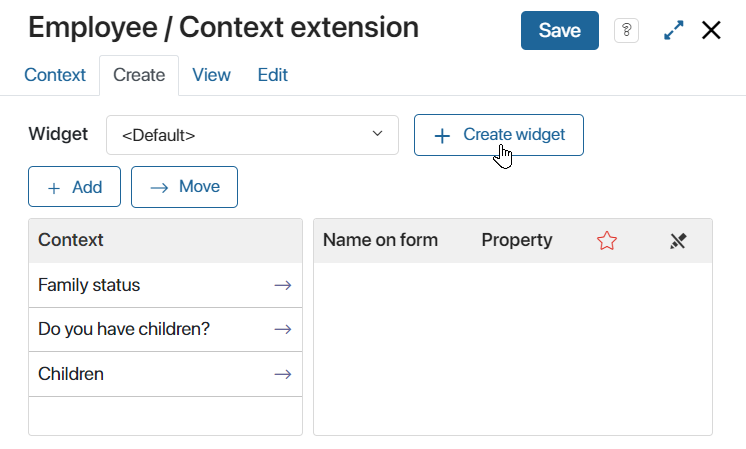
- In the opened window, fill in the fields:
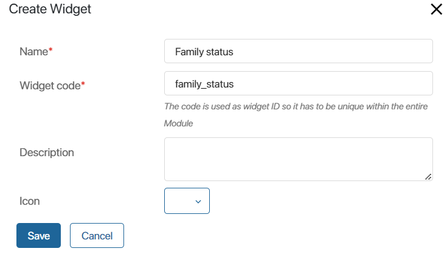
Specify the name and code of the widget, add its description and icon. Please note, the _extended suffix will be automatically added to the widget code after its creation.
Click Save. After that the widget template will open in the interface designer.
- Drag the Columns widget and properties from the extended app context to the modeling field.
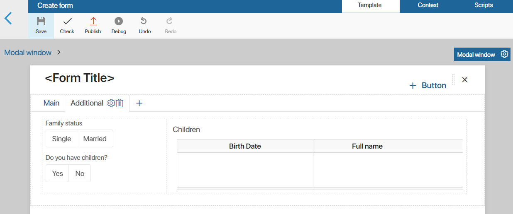
Read more about how to place the widget in Form templates.
- Save and publish the created widget. It will be displayed on the form in the location where the developer placed the Extended context display widget.
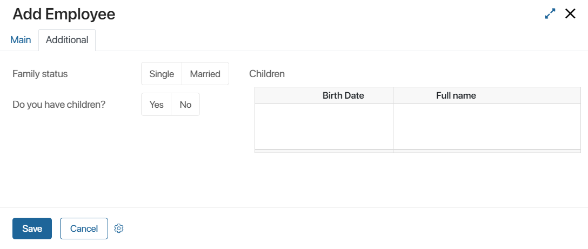
You can use the created widget on other app forms, as well as customize its system functions.
Found a typo? Select it and press Ctrl+Enter to send us feedback